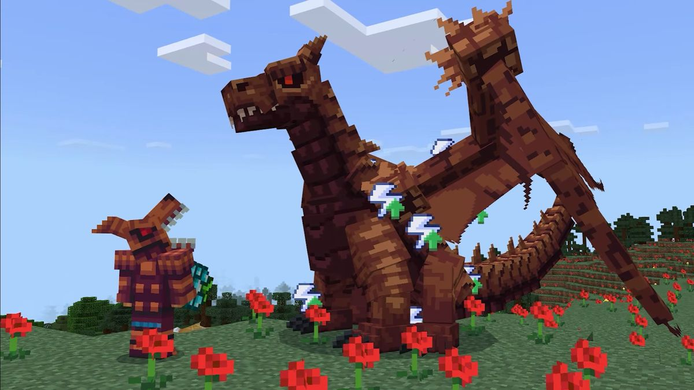
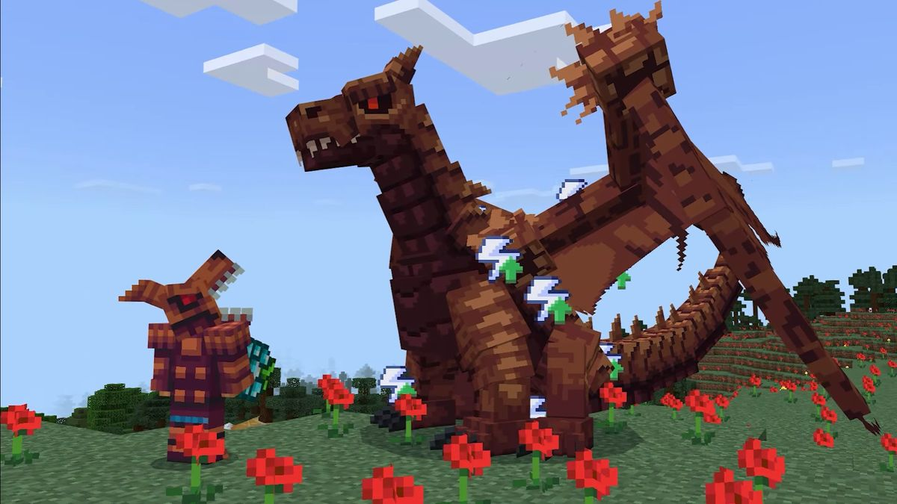

Mods
Mods are a fantastic way to expand and customize your Minecraft experience. They can introduce new gameplay mechanics, add exciting creatures, and even create entirely new dimensions to explore. Whether you're looking for challenging new adventures, advanced automation systems, or magical spells to master, mods offer a wealth of possibilities to enhance and personalize your Minecraft gameplay.
Texture packs provide a visually stunning way to transform the look and feel of Minecraft. By replacing the game's default textures with high-resolution graphics or thematic changes, texture packs can immerse you in different atmospheres and styles. From realistic medieval landscapes to vibrant cartoon worlds, texture packs allow you to tailor your Minecraft visuals to match your artistic vision or thematic preferences.
Shaders take Minecraft visuals to the next level by enhancing lighting, shadows, and atmospheric effects. They can introduce realistic water reflections, dynamic lighting that changes with the time of day, and stunning visual effects that add depth and realism to your world. Shaders are perfect for players who want to create breathtaking screenshots, cinematic videos, or simply enjoy a more visually immersive Minecraft experience.
Mods are powerful tools that can significantly expand and personalize your Minecraft experience. They introduce new gameplay mechanics, creatures, and entire dimensions to explore, offering a wide range of adventures and challenges. Whether you're interested in advanced automation, magical spells, or transforming your world with new technologies, mods provide endless possibilities to customize your gameplay and keep your Minecraft experience fresh and exciting.
Addons are another great way to enhance your Minecraft adventure. They typically focus on smaller-scale enhancements, such as adding new mobs, items, or functionalities without altering the core mechanics of the game. Addons can introduce new animals to tame, new crops to grow, or even new structures to discover in your world. They're perfect for players looking to add specific features or elements that complement their gameplay style without the extensive changes that mods often bring.
.jpg) 
